持续集成（Continuous integration，CI）是软件开发和发布流程中最重要的组成部分，有利于加快开发进度。Jenkins是常用的持续集成管理工具，本文将简要介绍Jenkins持续集成工具。
持续集成简介
持续集成（Continuous integration，CI）概念由Martin Fowler 于2006年提出：https://martinfowler.com/， 频繁地（一天多次）将代码集成到主干。
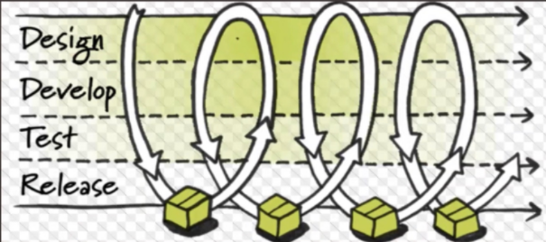
Continuous Integration doesn’t get rid of bugs, but it does make them dramatically easier to find and remove.
Martin Fowler, Chief Scientist, ThoughtWorks
持续集成好处：
- 快速发现错误：持续自动化测试，可以快速发现和定位错误，节约时间。
- 易于定位项目进度，使项目更加透明。
- 导致更快的发布
Jenkins简介
Jenkins官网：https://www.jenkins.io/
Jenkins官网文档：https://www.jenkins.io/doc/
Jenkins是免费开源的持续集成管理工具，基于Java开发，可以跨平台运行，提供持续集成和持续交付服务 ( continuous integration or continuous delivery，CI/CD)，自动化软件开发流程中的构建、测试和部署工作。Jenkins插件丰富，有超过1000个插件来支持构建、部署自动化，满足任何项目的需要。
持续集成工具比较：https://en.wikipedia.org/wiki/Comparison_of_continuous_integration_software
Docker Jenkins安装和启动方法参考：Docker搭建持续集成平台Jenkins
Jenkins配置
系统配置
进入Manage Jenkins -> System Configuration -> Configure System进行系统配置，有很多配置参数可以配置，比如：
- Jenkins URL：服务器域名
- 管理员邮箱
- Github配置
- 默认 Shell：bash
- 等
在windows代理节点中，默认命令行使用cmd，如果你想使用Git Bash，可以在系统配置中进行配置。进入Manage Jenkins -> System Configuration -> Configure System，下拉到shell，配置Shell executable为你的命令行文件路径，比如我的git bash路径为：D:/tools/Git/bin/sh.exe
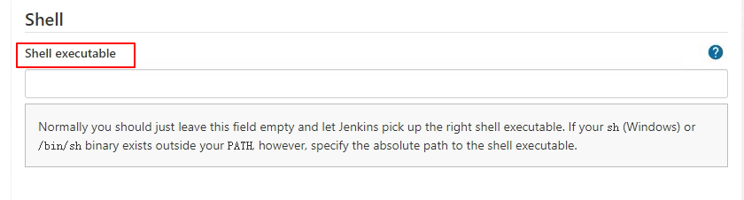
插件管理
Jenkins插件众多，扩展了很多功能。进入Manage Jenkins -> System Configuration -> Manage Plugins进行插件的管理。
可以先点击Advanced 设置更新网址URL：https://mirrors.tuna.tsinghua.edu.cn/jenkins/updates/update-center.json
然后进行插件的安装更新操作， 插件的安装方法，在Available中的输入框输入要安装的插件名称关键字进行搜索，选择要安装的插件，点击“Download now and install after restart”进行下载安装。
Jenkins推荐插件：
- Rebuilder
- Safe Restart Plugin
- Pipeline
- Text Finder
- Blue Ocean
- Allure
用户权限控制
用户管理
在Jenkins的初始化安装过程中会先注册一个管理员用户，管理员用户可以创建一般用户，管理员用户具有最高权限。
进入Manage Jenkins -> Security -> Configure Global Security进行安全配置
可以勾选允许用户注册，团队人数较少时，一般建议不勾选，由管理员创建

进入Manage Jenkins -> Security -> Manage Users进行用户管理，可以进行用户删除、修改和添加操作
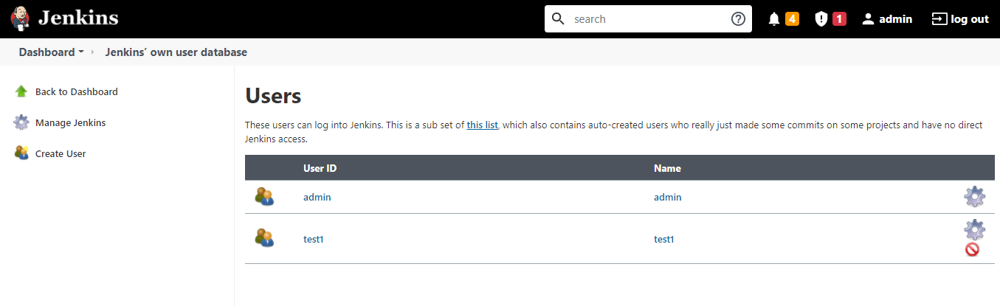
用户权限管理
可以使用 Matrix Authorization Strategy 插件对用户权限进行管理。
进入Manage Jenkins -> Security -> Configure Global Security -> Authorization
可以选择【安全矩阵】（个人权限）对用户进行权限管理。
项目权限配置
如果要对项目进行授权管理，让不同的用户管理不同的项目，一种方式是勾选【项目矩阵】：
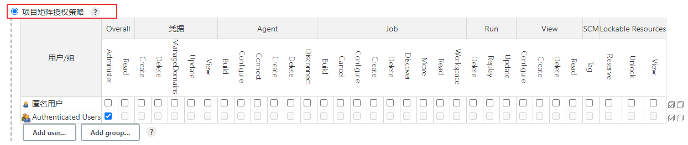
配置好后，在项目内可以配置用户权限，选择一个job，进入项目配置，可以配置项目权限：
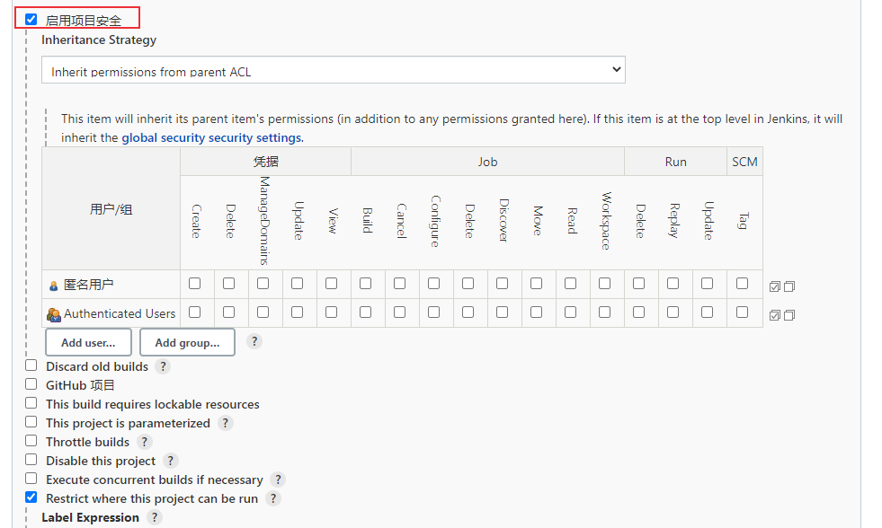
除了这种方式外，还有一种方式就是对用户进行角色管理，这个功能由Role-based Authorization Strategy插件提供，先安装这个插件。
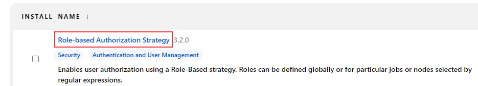
进入Manage Jenkins -> Security -> Configure Global Security -> Authorization，勾选Role-Based Strategy：
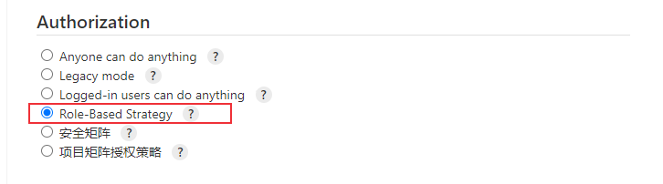
在Mange Jenkins -> Security中会出现Manage and Assign Roles，
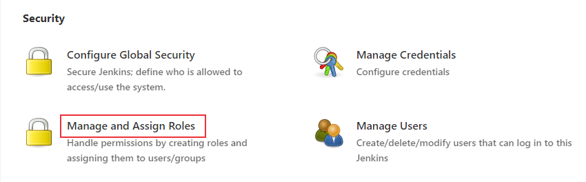
点击Manage and Assign Roles，发现可以管理和分配角色。
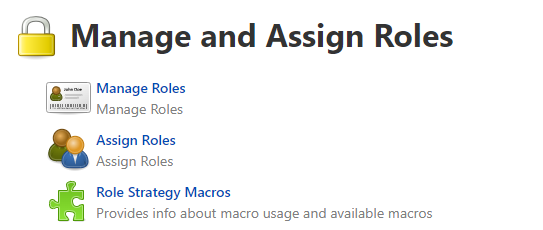
先进入【Manage Roles】，添加tester和developer两个Global roles，分配一些权限。
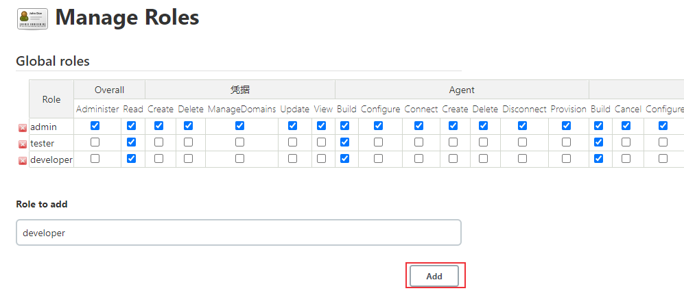
添加Item roles，
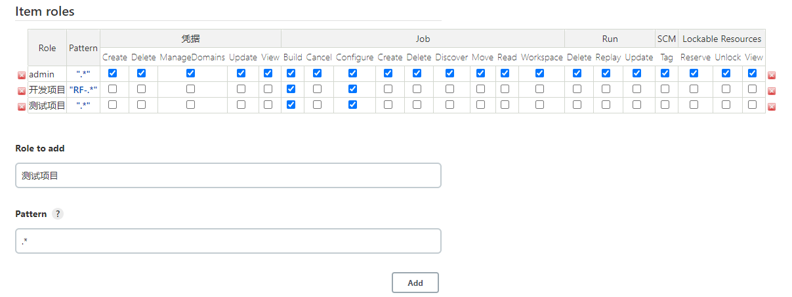
添加Node roles，
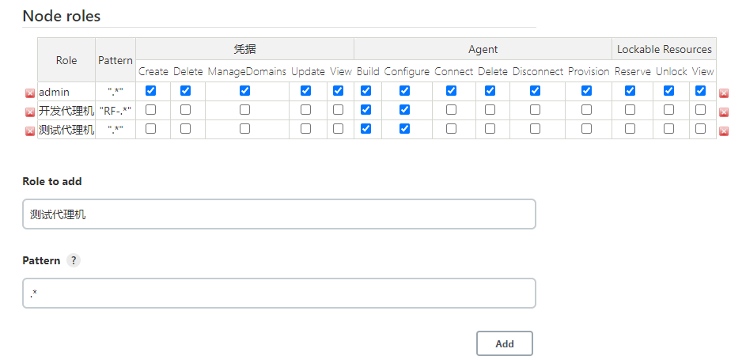
配置完成后，添加tester1和developer1两个用户。
进入【Assign Roles】，配置Global roles
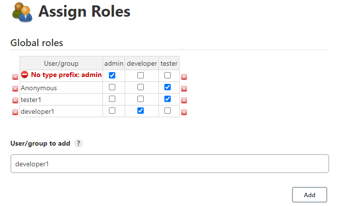
配置Item roles
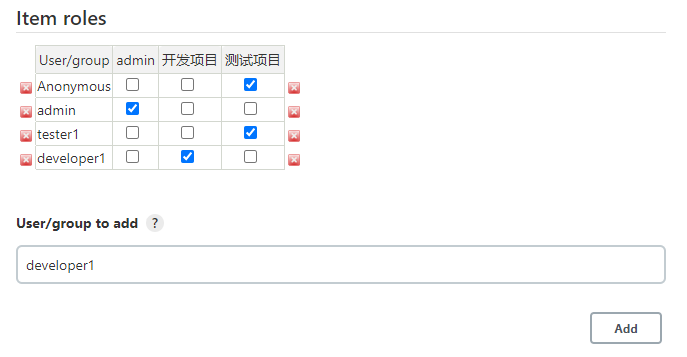
配置Node roles
配置完成后可以登录不同角色用户来测试一下。
关闭跨站请求伪造保护（CSRF）
Jenkins高版本不能再web页面关闭CSRF。
一种方法是在Jenkins启动时加入取消保护的参数：
1 | -Dhudson.security.csrf.GlobalCrumbIssuerConfiguration.DISABLE_CSRF_PROTECTION=true |
第二种方法是修改Jenkins容器中的/usr/local/bin/jenkins.sh文件：
将Dhudson.security.csrf.GlobalCrumbIssuerConfiguration.DISABLE_CSRF_PROTECTION=true 添加到exec java 开头的那行命令中：
1 | exec java -Duser.home="$JENKINS_HOME" -Dhudson.security.csrf.GlobalCrumbIssuerConfiguration.DISABLE_CSRF_PROTECTION=true "${java_opts_array[@]}" -jar ${JENKINS_WAR} "${jenkins_opts_array[@]}" "$@" |
如果Jenkins容器没有vi或者vim命令，可以将文件复制出来修改后，再复制回去：
1 | $ docker cp db10006f12ad:/usr/local/bin/jenkins.sh . #复制到当前目录 |
修改完成后重启jenkins容器
1 | docker restart jenkins |
然后在【全局安全配置】中可以看到 跨站请求伪造保护 已经关闭
执行机管理
在实际工作中，考虑到宿主机资源限制，可以采用多节点的方式，将任务分配到其他节点执行。通过添加多个Jenkins Nodes来执行Jenkins任务， Jenkins运行的主机称为Built-In Node：
- 节点上需要配置Java运行环境, Java_Version>1.5，注意：Jenkins 2.357 及 LTS 2.361.1之后的版本要求Java 11 或者 17
- 节点支持Windows, Linux，Mac系统
先查看是否配置了Java运行环境：1
2
3
4
5[root@server /]# java -version
openjdk version "1.8.0_252"
OpenJDK Runtime Environment (build 1.8.0_252-b09)
OpenJDK 64-Bit Server VM (build 25.252-b09, mixed mode)
[root@server /]#
进入Manage Jenkins -> System Configuration -> Manage Nodes and Clouds
添加Linux节点
配置节点（注意我配置的agent节点为宿主机）：
发现节点连接不成功
查看日志，发现没有known_hosts1
/var/jenkins_home/.ssh/known_hosts [SSH] No Known Hosts file was found at /var/jenkins_home/.ssh/known_hosts. Please ensure one is created at this path and that Jenkins can read it.
一种解决方法是，设置认证策略为手动信任
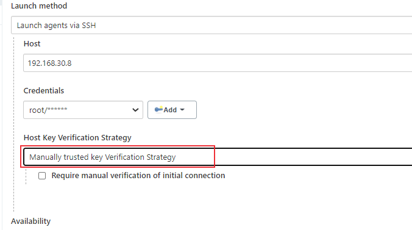
上线成功
添加Windows节点
windows节点配置
节点连接方式
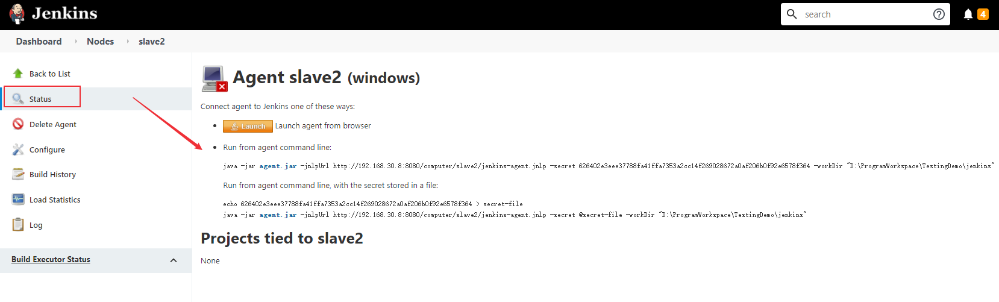
第一种方式：点击Launch图标下载，双击运行下载的文件jenkins-agent.jnlp
刷新，上线成功
第二种方式：1
2
3
4java -jar agent.jar -jnlpUrl http://192.168.30.8:8080/computer/slave2/jenkins-agent.jnlp -secret 626402e3eee37788fa41ffa7353a2cc14f269028672a0af206b0f92e6578f364 -workDir "D:\ProgramWorkspace\TestingDemo\jenkins"
# Run from agent command line, with the secret stored in a file:
echo 626402e3eee37788fa41ffa7353a2cc14f269028672a0af206b0f92e6578f364 > secret-file
java -jar agent.jar -jnlpUrl http://192.168.30.8:8080/computer/slave2/jenkins-agent.jnlp -secret @secret-file -workDir "D:\ProgramWorkspace\TestingDemo\jenkins"
启动jenkins时，开启了8080和50000端口（Docker搭建持续集成平台Jenkins），8080端口是jenkins服务器对外URL地址，50000端口为slave节点与jenkins的通讯端口，在默认情况下，基于JNLP的Jenkins代理通过TCP端口50000与Jenkins主站进行通信。
Windows查看50000端口占用：1
2
3
4C:\Users\10287>netstat -aon | findstr "50000"
TCP 127.0.0.1:50000 0.0.0.0:0 LISTENING 8644
TCP 192.168.30.100:52297 192.168.30.8:50000 ESTABLISHED 10028
Linux查看端口占用情况：1
2
3
4
5
6
7
8
9[root@server /]# lsof -i:8080
COMMAND PID USER FD TYPE DEVICE SIZE/OFF NODE NAME
docker-pr 2787 root 4u IPv4 51423 0t0 TCP *:webcache (LISTEN)
[root@server /]# lsof -i:50000
COMMAND PID USER FD TYPE DEVICE SIZE/OFF NODE NAME
docker-pr 2775 root 4u IPv4 50675 0t0 TCP *:50000 (LISTEN)
[root@server /]# netstat -aptn | grep 50000
tcp 0 0 0.0.0.0:50000 0.0.0.0:* LISTEN 2775/docker-proxy
[root@haiyong jenkins_home]#
启动windows节点时可能会报如下错误：
1 | java.lang.Exception: The server rejected the connection: None of the protocols were accepted" |
解决方案：进入Manage Jenkins -> Configure Global Security -> Agents -> Agent protocols，勾选Inbound TCP Agent Protocol/4 (TLS encryption)
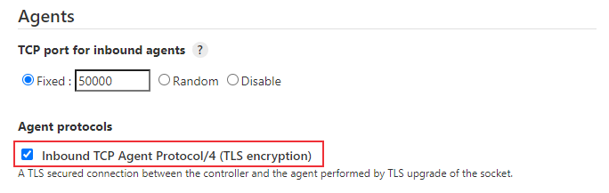
设置windows节点开机自动启动
下面介绍2种方法。
方法1：添加任务计划程序
https://www.cnblogs.com/landhu/p/6758197.html
进入控制面板 -> 管理工具 -> 任务计划程序
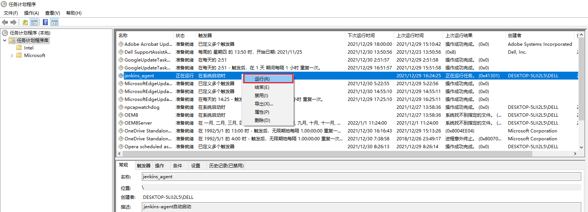
点击操作，创建一个基本任务，设置名称，点击下一步
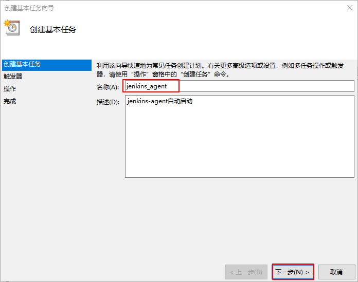
设置触发器
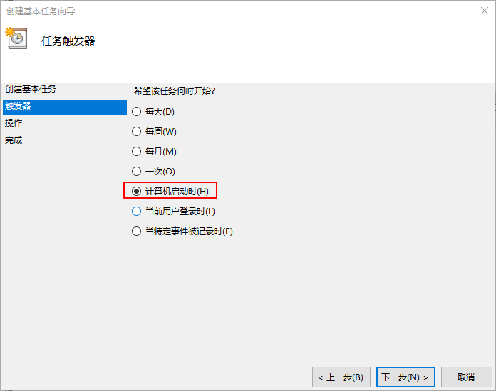
选择启动程序
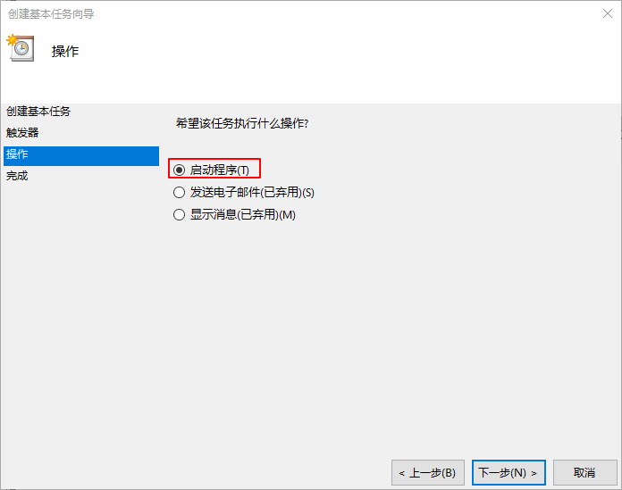
设置程序脚本及参数
脚本输入java.exe，参数设置为 -jar agent.jar -jnlpUrl http://192.168.98.228:8080/computer/windows%2Dslave1/jenkins-agent.jnlp -secret b246b061660b4db4d48a69090705624d19fab65e2f30b53e73c9746309fa2a0c -workDir "D:\jenkins"

点击下一步，点击完成
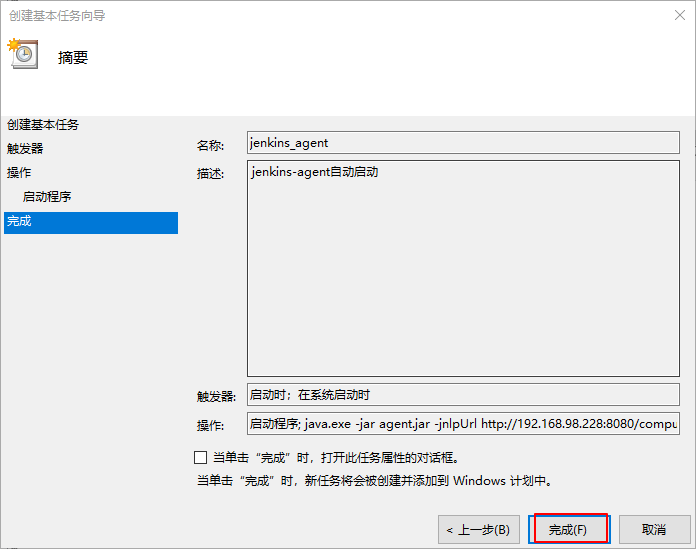
可以手动运行一下，查看是否可以启动成功。

方法2：自动运行启动脚本
编写bat脚本jenkins_agent.bat：
1 | @echo off |
如果直接将这个bat脚本放到 C:\ProgramData\Microsoft\Windows\Start Menu\Programs\StartUp 路径下，开机启动时会打开一个命令行窗口，如果不想打开命令行窗口，希望它在后台运行，可以使用VBS脚本运行。
编写vbs脚本jenkins_agent.vbs：
1 | Set WshShell = CreateObject("WScript.Shell") |
将jenkins_agent.vbs放到StartUp目录下即可。
Jenkins创建项目
创建项目
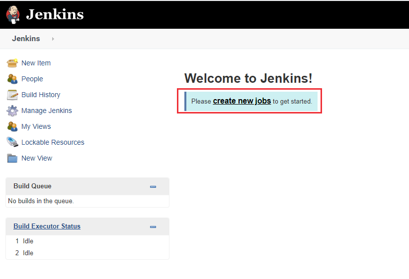
选择Freestyle project
项目配置
可以发现一个job的组成部分包括：
- General：项目通用配置
- Source Code Management：源代码控制，比如Git配置
- Build Triggers：触发，构建时间配置（定期构建，代码变更构建）
- Build Environment
- Build：执行命令，比如执行shell
- Post-build Actions：执行完成后进行分析，生成报告，发送邮件等
构建完成
查看控制台输出
SVN源码管理报错
配置SVN源码管理时可能报如下错误信息：
1 | org.tmatesoft.svn.core.SVNException: svn: E175002: SSL handshake failed: 'The server selected protocol version TLS10 is not accepted by client preferences [TLS12]' |
原因是，TLS 1.0易受中间人（man-in-the-middle）攻击，服务器和客户端之间发送数据的完整性和身份验证存在风险。1.0和1.1版本的一些实现也容易受到POODLE(Padding Oracle on Downgraded Legacy Encryption)攻击，因为它们在解密后接受了一个不正确的填充结构。所以TLSv1和TLSv1.1在java安全配置文件中被禁用了。
解决方案：https://asyncstream.com/tutorials/java-tlsv10-not-accepted-by-client-preferences/
编辑
/opt/java/openjdk/conf/security/java.security文件，将security.overridePropertiesFile设置为true。创建名为
enableLegacyTLS.security的文件，将java.security文件中的jdk.tls.disabledAlgorithms属性和值复制到文件中。删除
enableLegacyTLS.security的文件中的TLSv1和TLSv1.11
2
3jdk.tls.disabledAlgorithms=SSLv3, TLSv1, TLSv1.1, RC4, DES, MD5withRSA, \
DH keySize < 1024, EC keySize < 224, 3DES_EDE_CBC, anon, NULL, \
include jdk.disabled.namedCurves添加
-Djava.security.properties="/opt/java/openjdk/conf/security/enableLegacyTLS.security"参数到/usr/local/bin/jenkins.sh文件如果是Windows代理机，编辑
C:\Program Files\Java\jdk1.8.0_311\jre\lib\security\java.security文件，删除jdk.tls.disabledAlgorithms中的TLSv1和TLSv1.1，Linux类似。
Windows节点无法执行bat命令
在Windows执行机上执行bat脚本时，可能报如下错误：
1 | [Pipeline] bat |
解决方法：在Windows节点配置中添加环境变量
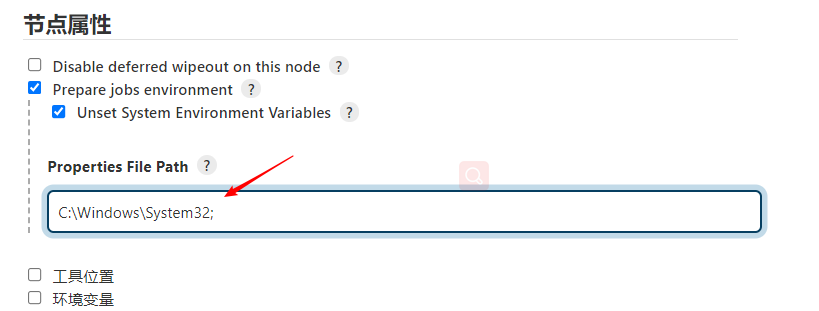
添加完成后重启Jenkins就可以了。
Jenkins父子多任务运行
任务启动的触发条件：其他任务的运行结果
- 前驱任务成功的条件下被触发
- 前驱任务失败的条件下被触发
- 前驱任务不稳定的条件下被触发
适用于有先后次序关系的任务，比如 部署环境任务，验收测试任务
Jenkins配置成功任务关联
1、新建第一个任务first_test
2、构建
3、新建第二个任务second_test
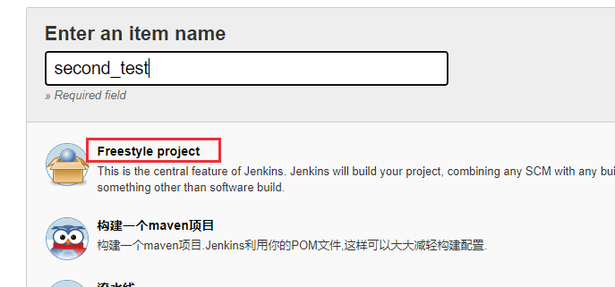
4、构建，设置触发方式
设置为前驱任务稳定成功的条件下被触发
5、启动第一个任务first_test
控制台输出
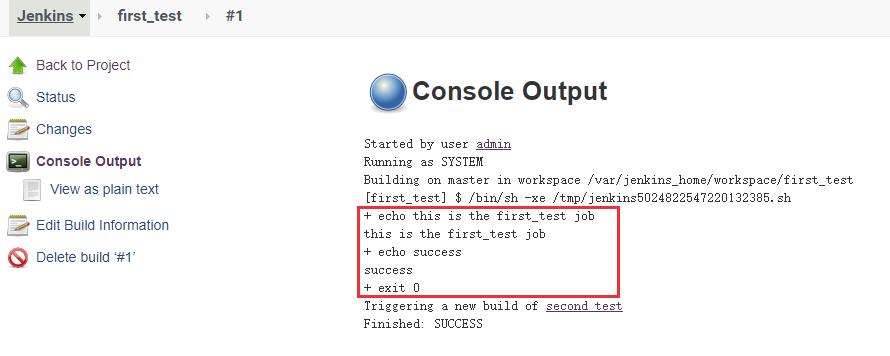
可以看到second_test也成功了
前驱任务不稳定的条件下也被触发，可以使用Text Finder插件来构建不稳定条件
Jenkins配置失败任务关联
前驱任务稳定成功的条件下被触发
Jenkins邮件报警
Jenkins可以配置邮件通知，比如在Jenkins构建任务之后发送邮件通知，错误报警等
安装插件：Email Extension和Email Extension Template
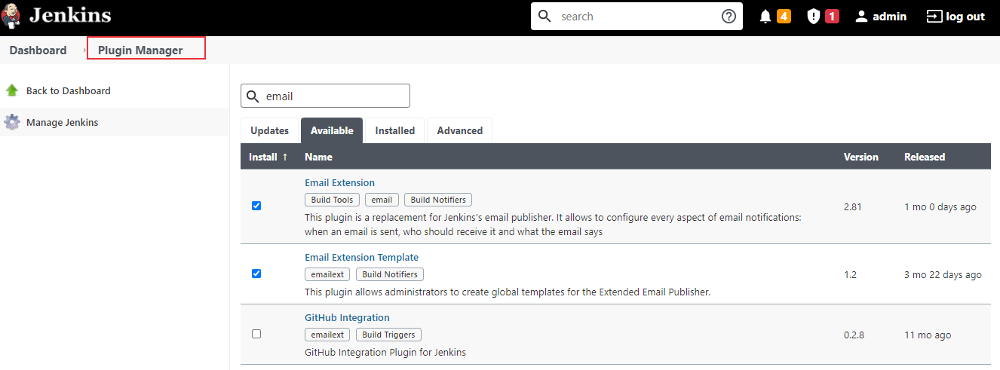
Jenkins配置 Email
进入Manage Jenkins -> System Configuration -> Configure System 配置系统管理员e-mail地址
配置Extended E-mail Notification，注意SMTP Password不是邮箱密码，为你的邮箱授权码
拉到最下面，配置邮件通知，配置完成后，可以发一个测试邮件，查看是否配置成功

Jenkins邮件模板配置
Jenkins可以根据你配置的邮件模板格式来发送结果邮件，通过Jenkins的参数定制自己的Email模板，常用的参数key值如下:
- $BUILD_STATUS ：构建结果
- $PROJECT_NAME ：构建脚本名称
- $BUILD_NUMBER ：构建脚本编号
- $JOB_DESCRIPTION ：构建项目描述
- $CAUSE ：脚本启动原因
- $BUILD_URL ：脚本构建详情URL地址
Default Subject1
Jenkins构建提醒：$PROJECT_NAME - Build # $BUILD_NUMBER - $BUILD_STATUS!
Default Content1
2
3
4
5
6
7
8
9
10
11
12
13
14
15
16
17
18
19<hr/>(自动化构建邮件，无需回复！)<br/><hr/>
项目名称：$PROJECT_NAME<br/><br/>
项目描述：$JOB_DESCRIPTION<br/><br/>
运行编号：$BUILD_NUMBER<br/><br/>
运行结果：$BUILD_STATUS<br/><br/>
触发原因：${CAUSE}<br/><br/>
构建日志地址：<a href="${BUILD_URL}console">${BUILD_URL}console</a><br/><br/>
构建地址：<a href="$BUILD_URL">$BUILD_URL</a><br/><br/>
详情：${JELLY_SCRIPT,template="html"}<br/>
<hr/>
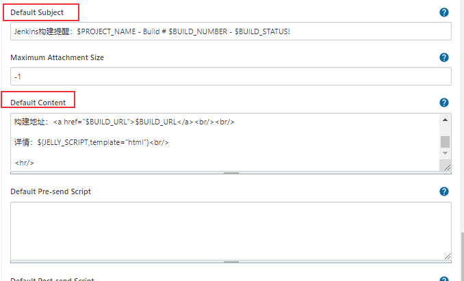
Jenkins报警规则
在模板设置的下方有个 Default Triggers 按钮，点击后，设定报警规则

在job的构建后操作步骤选择” Editable Email Notification “
配置完成后，构建项目，查看控制台输出
查看邮箱，发送成功！
其它
删除构建历史
介绍两种删除构建历史的方法：
方法1：项目配置中设置
进入项目配置，勾选【Discard old builds】进行配置，可以配置保留天数、最多构建数等
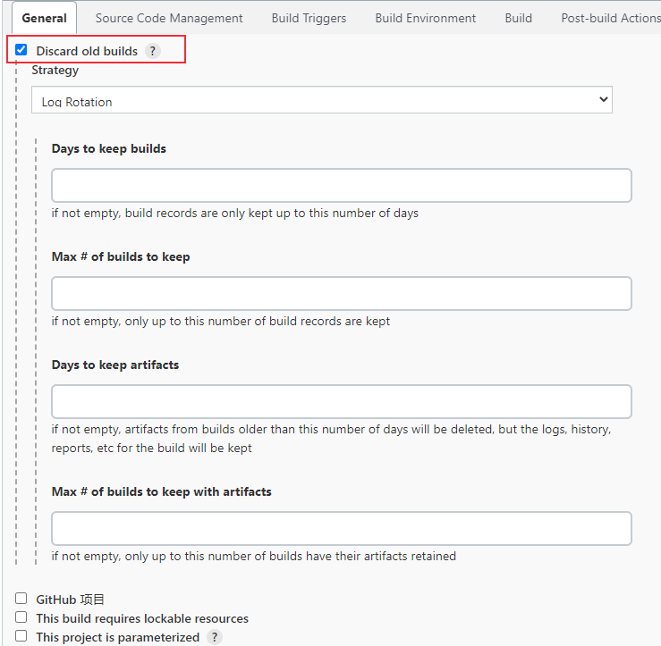
方法2：执行 Groovy脚本
可以通过Groovy脚本来删除构建。
点击【Manage Jenkins】-> 【Script Console】
删除所有构建：
1 | def jobName = "test_shell" |
点击运行，job名为 test_shell 的构建历史都会被删除，重新构建时构建序号会从1开始。
参考资料：
本文标题:持续集成平台Jenkins配置方法介绍
文章作者:hiyo
文章链接:https://hiyongz.github.io/posts/continuous-integration-for-jenkins/
许可协议:本博客文章除特别声明外，均采用CC BY-NC-ND 4.0 许可协议。转载请保留原文链接及作者。